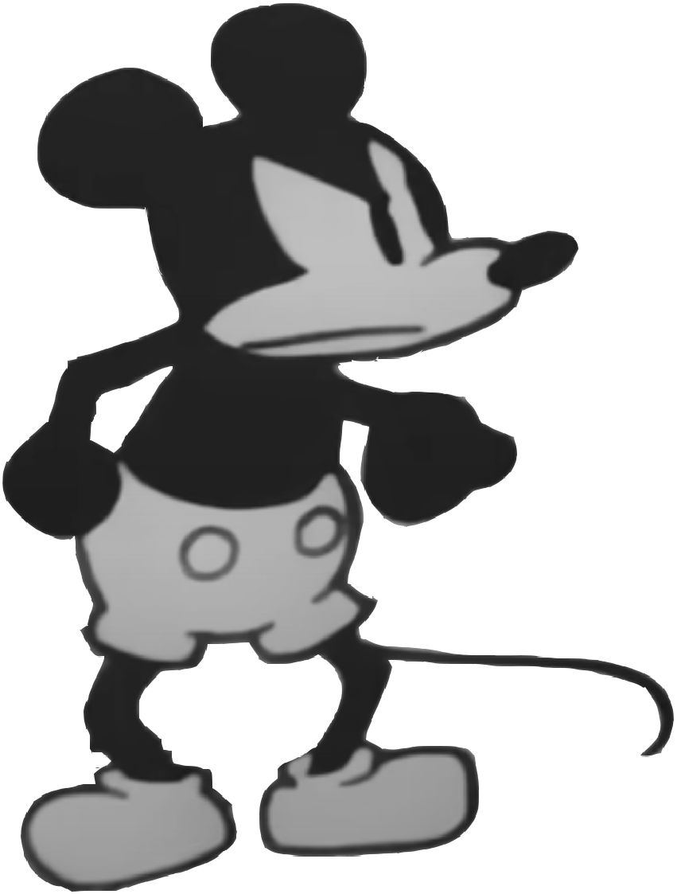
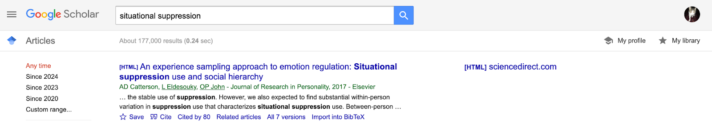

Why Research Methods?
Hi! Stay tuned for reading materials. Thanks!
Part 1. Good Science
The Scientific Method in 5 Easy Steps
So, you’ve defined a research question you are interested in? Yeah! The Scientific Method is used to help science progress toward valid (accurate, “true”) predictions and avoid biases. This is the same scientific method you may have learned about in a previous science class or used for a science fair project1. There are five parts, described below.
Step 1 : Identify a Question
First, a researcher starts with a question about the variable that they want to predict or the psychological phenomenon they are interested in. In Chapter 1, we talked about how these questions are often informed by the researcher’s own observations or experiences.
Still looking for a project topic? A few ideas to consider :
Think about why you become a psychology major. Was it because you were interested in people, find dreams fascinating, wonder if you could get good at detecting people’s lies? Think about these interests, then think about what variables might be relevant. For example, while you won’t have access to an fMRI machine (or the required statistics) in order to reconstruct images people see during their dreams, you might study people’s beliefs about the importance of their dreams, or the extent to which they have dreams.
Focus on a problem you’ve encountered or observed in real-life. Notice that something in the world could be better? How would you label that as a variable? For example, maybe you want to better understand people’s attitudes about capitalism or racism or housing costs.
Look at faculty webpages, and see what they (and / or their graduate students) are studying. Does anything seem interesting to you? Who looks like they might be cool to work with? What aspects of their research question might you study with this project?
Chase the latest trends of today. What’s capitalism care about these days? AI?
But you don’t have to take my word for it. Here’s another guide that might offer some help, or ask for help in the class discord / office hours / lecture!
Step 2 : Develop a Theory
A scientific theory is one that is comprehensive, explanatory, and supported by evidence. For example, the theory of evolution is comprehensive (it relates to all nature, not just plants or animals or finches), it is explanatory (it’s why we and cats both narrow our eyes when we are scared and angry), and it is supported (by over 100 years of evidence2).
{kind=link}
RECAP : Statistical Models as a Question & Theory:
As discussed in Lecture 1, a scientific model identifies the variables that a researcher wants to predict (the dependent variable = the focus of the question) and the variables that the researcher thinks will explain the dependent variable (the independent variables).
For example, if my question is “What causes rain to fall in the sky?”, then my dependent variable would be listed as rain (sometimes it rains; sometimes it does not). If my theory is that it rains because there are dark clouds in the sky, then I would write my model as : rain ~ clouds + error.
Most scientists refrain from saying that a theory is “proven” or “true” for two reasons:
First, the scientific method is a process - our knowledge and ideas are continually updated. So it’s likely that the theory of evolution will be updated as we learn more about the complex ways genes replicate and interact with the environment. Saying that a theory is “proven” is a common mistake - watch out for it!
Second, most scientists (and psychologists) draw from Karl Popper’s philosophy of science, which adheres to a requirement for science called falsifiability - the ability to find evidence that rejects a theory (“ability to falsify”). This means a theory is never ‘proven’ because scientists are continually looking for evidence to reject the theory. It also means that a belief that cannot be tested or rejected would be rejected as a scientific belief - you have to be able to test your belief in some observable way. Falsifiability is where I think science separates from religious belief - someone with faith doesn’t need evidence, and that’s okay! It just doesn’t make the belief scientific under science’s narrow definition.
Hypotheses are specific predictions that researchers make about what they expect to see in the data if their theory is supported or is not supported by data.
The alternative hypothesis (sometimes written HA) is the researcher’s own belief. It may seem strange to label your belief “alternative” when this word is used for things that are supposed to be different (“alternative rock = it’s not your parent’s rock & roll!”), and we are so used to thinking that our beliefs are the default that to call them alternative seems wrong. This is an example of previous beliefs bias, and the decision to label our beliefs as the “alternative” is an example of science trying to correct this bias. It’s a small and symbolic correction, but it’s better than nothing.
The null hypothesis (sometimes written H0) is the label given for whatever evidence would not support the researcher’s belief.
EXAMPLE : Let’s say you believe that smoking cannabis hurts a person’s memory. What’s the alternative hypothesis? What’s the null?
Null Hypothesis : People who smoke cannabis will perform BETTER or NO DIFFERENT on a memory test than people who do not smoke marijauna.
Alternative Hypothesis : People who smoke cannabis will perform WORSE on a memory test than people who do not smoke marijauna.
Many students forget to include the “NO DIFFERENT” in the null hypothesis example above. However remember that the null hypothesis is everything that your theory is not. So if your theory is that smoking cannabis HURTS memory, then finding no difference in the memory of pot smokers vs. non-smokers would not support your theory, and is thus part of the null hypothesis. (Note : some of y’all may have missed this because you are remembering learning about “directional” vs “non-directional” hypotheses - we will discuss this more in Lecture 8.)
Check-In : Identifying Models, Null, and Alternative Hypotheses.Let’s review with a quick check-in to practice identifying models based on research questions and theories, and identifying the null and alternative hypotheses based on a given theory. As a reminder, check-ins are required, graded for completion, and will be used for you and me to gauge understanding.
Step 3 : Collect Data
As described above, scientific theories are supported by evidence called data. How researchers collect data is something we will discuss in more detail over the next few weeks. In general, researchers have to figure out how to measure the variables they are interested in studying (e.g., “how will I know if someone is happy or not?”), and then find participants (people or animals) to study (e.g., “whose happiness should I study”).
For example, in our smoking cannabis example the decisions about how to measure memory (a music memory game or a word recognition task?) or how much cannabis (a little or a lot?) or who to study (Berkeley students or your grandparents?) in the study would likely influence the results.
The decisions that researchers make about how to define their measures and the participants they will study are very important, and will influence the results of the study (and thus our knowledge of the topic), so stay tuned for more discussion!
Step 4 : Use Data to Test Theories
Finally, researchers look to see if the data they collected supports or rejects their theory (and evaluate how strongly their theory is supported or rejected). We’ll talk much more about using data to test theories this semester.
In our smoking cannabis example, the researcher would look to see which group did better on the memory test, and if the smokers did worse, then their theory would be supported (by this one study, at least).
Step 5 : Repeat
Once a study is completed, researchers repeat the scientific method in two different ways.
Researchers will sometimes repeat the exact same steps a second time - something called replication. Replication is critical to science.
Scientists also repeat the scientific method with a new question that is based on the results from their first study. Science is a process, and researchers are never done learning about how to better predict & control the world. There’s always more research to do. For example, after identifying a pattern between smoking cannabis and memory, a researcher might ask whether the type or dosage of cannabis intake would influence memory, whether abstinence could reverse the effects of memory impairment, or whether cannabis and coffee together might lead to a different result. Note that this is not an example of replication, since researchers are not testing the same question they had - but it’s repeating the scientific method for a new question inspired by the old. This is good, and part of scientific progress. But the problem is that the incentives for scientific publication focused almost entirely on “new” research, and not really making sure that the “old” research was valid.
It’s Never Actually Easy
Science is hard, and people are very complex, which makes psychological science very hard. Unfortunately, psychology is in a bit of a Replication Crisis. This crisis is two-fold a) researchers tend not to seek to replicate their (or others’) results, and b) systematic attempts to do so have suggested that the majority of results in psychology do not replicate3.
Part 2. Good Data
Scientists evaluate the quality of their measures in terms of validity (“truth” or accuracy) and reliability (repeatability or precision). Learn more about these two concepts - and their specific forms - in the two videos below.
Validity
Validity is
- Face Validity :
Reliability
Bad Data : Phrenology in terms of Validity and Reliability
Watch the video below to review these terms, in the context of phrenology - an example of scientific racism.

Phrenology is no longer considered a valid or reliable science, yet its presence still lingers in psychology, and is often taught as history without reference to its racist origins and consequences4. And as we have (and will continue to discuss) there are still many ways in which racism (and sexism, classism, and ableism) occur and affect psychology (and other sciences too).
For example, more modern intelligence testing is often criticized for prioritizing White European values and language in the way it assesses supposedly “objective” knowledge. In an important test of this claim, the psychologist Robert Williams (pictured to the right) designed an IQ test that was as reliable as the default IQ test, but was “biased” to prioritize and value Black culture.

As seen in the table, Black students scored higher on this IQ test than White students - a point he (and others) use to emphasize the inherent biases in intelligence testing. Dr. Williams also came to define the concept of Ebonics, and demonstrate that African American English is as much a complete language as “Standard” English.

Check-In : Reliability and Validity.
Test your understanding of reliability and validity with the check-in above.
Below is a video to review the check-in answers, since these terms can be tricky :)
Would You Like to Learn More? [Optional Readings]
Here’s a textbook chapter on the same topics. Note these authors use three terms to describe what I broadly call “convergent validity”. Internal consistency (a form of reliability) is measured with “alpha reliability” (we will learn about this next week).
Dr. Williams talks about his research here and here’s an episode of the TV show Good Times that Dr. Williams consulted on. Here’s a link to his full study. Note that Dr. Williams gave his intelligence test a name I don’t feel comfortable using because it is sexist :(. Times change, and it’s good to call out outdated language and update our terms accordingly :)
Learn more about the racist history of how phrenology was produced and consumed and an article that conducted more recent researchto test phrenology’s theories.
Part 3. Good Research for Fun and Profit
Researchers share their knowledge with others in scientific articles. These are written by researchers for other researchers, tend to be very detailed and technical, and are a researcher’s golden ticket to getting a job, research grant, invited talk or book deal, podcast invitation, etc. So there’s a lot of pressure to publish research among academics.
The Publication Process
Researchers spread their scientific knowledge by publishing research papers. You can read more about how researchers publish research HERE. However, the TLDR is something like this :
Researcher has an idea! They assemble a team of others interested in the idea, and do a literature review in order to gain background knowledge on the topic.
Researcher designs a study, collects data, analyzes the data, and writes up the data as a report. All the steps of the scientific method. This is what you will do for the final project!
Researcher submits the report to a scientific journal. A journal is a collection of articles that are usually united by some common theme. In general, the shorter the name of the journal, the more prestigious5. For example, the “Journal of Research in Personality” is considered less prestigious than the “Journal of Personality and Social Psychology”, which is less prestigious than the journal called “Psychological Science”, which is considered less prestigious than the journal called “Science”.
An editor decides whether to review or reject the article. Editors make an initial decision - based on a summary of the study and a letter that the author writes to the editor - whether the research article might be a good fit for the journal. If so, they pass it along to the next step. If not, they send a “Thanks, but….” rejection letter.
The editor sends the article to peer-reviewers. Peer reviewers are other researchers who have some related research interests or skills in the topic of the paper. They will look over the article. The editor may know these people, or they get asked by another peer-reviewer who didn’t want to do it but nominated someone else to step into the role. Peer-reviewers work on a completely voluntary basis - it’s seen as required service, and there’s a bit of professional reputation to maintain in doing this work. Yes, there are problems with unpaid labor in academia. We can chat about that if you’d like; ask questions / raise it as an issue on Discord.
The editor makes a decision on the paper based on the feedback from the peer-reviewers. The editor summarizes the feedback, and either accepts the paper, accepts as long as the person makes necessary revisions, asks the researcher to “Revise and Resubmit” (this is called an R&R - probably the most common outcome, and does not guarantee that the paper will be accepted if the revisions are made, but will get sent out to peer-reviewers again), or rejects the paper. In any case, the author will see the comments made by the peer-reviewers and the editor.
The (accepted) paper goes to a proofreader and is published. Hooray! This process probably takes anywhere from 6 months (insanely fast) to 2 years (or more, depending on the number of revisions that are required).
Publish! Or Perish…?
Ask any grad student or professor - the publication process is stressful, unpredictable, slow, and threatening. Grad students are required to publish papers in order to have a chance at an academic job as a researcher (and even extremely productive and thoughtful graduate students are not guaranteed an academic job), professors are required to publish papers in order to get a chance of getting tenure (and even extremely productive and thoughtful researchers are not guaranteed tenure).
This creates incredible pressure on researchers to get results; pressure that often can interfere with people’s ability to do GOOD science. We’ll talk about this more throughout the semester; bring questions to class / Discord!
Types of Research Articles
We’ll learn how to read and dissect scientific articles this semester, but first it will be important to learn how to identify There are a few different types of articles that researchers write :
Original Reports : An original report is where the researcher(s) write about the results of a novel study they did to test some theory. This means the researchers did something “new” - usually they collected and analyzed new data to test a theory, or analyzed existing data in a new way. Here’s an example of an original report on the topic of emotion regulation.
Replication : A replication is a type of study where a researcher repeats the steps they (or another) researcher did, and sees if they get the same result. As we discussed, psychology (and many other fields) is in a replication crisis. This type of article was not very common before the 2010s, but is more common now. Still, faculty tend to be biased toward producing original reports - a school like Berkeley or Stanford would not hire a researcher just for doing replications. Here’s an example of a replication on the topic of emotion regulation. Note this is not really a direct replication, since they replicated in a different population.
Meta-Analyses : A meta-analysis is where researchers take other people’s data, collect it, and analyze it in order to see broad trends across an entire field. For example, a meta-analysis might take all the research on whether there’s a relationship between playing violent video games and violent behavior, and analyze this existing research in terms of common themes, such as the type of video games the researchers studied, the measures of violence, and the results. Meta-Analyses can be a great way to look at a broad trend, but they rely on the assumption that the individual studies they summarize are, in fact, valid themselves. That is, if there are systematic biases in the way researchers study a topic, the Meta Analysis won’t solve or even identify those problems. Here’s an example of a meta-analysis done on the topic of emotion regulation.
Review Article : Review articles summarize existing research without doing any additional data analysis (in contrast to a Meta-Analysis, in which there is data analysis of past research). This is the closest thing to a paper you might write in an English class - the authors take past research, summarize it in terms of common themes, and maybe highlight limitations, or new directions the field might take. Review articles are a great way to get a broad overview of a topic, since they summarize and organize past research, and will often highlight next steps that researchers should take. Here’s an example of a review article done on the topic of emotion regulation.
The Peer Review Process
In order to publish their results, researchers have their peers review their work, and provide comments or suggestions. The peer-review process ideally serves two purposes :
Peer Reviewers Help Improve the Research. The peers doing the reviewing are supposed to have expertise in the topic of the paper. This allows them to suggest ways to improve the paper. These suggestions can run from the simple (such as recommending other researchers to reference in the introduction or additional analyses to run) to very involved (suggestions for additional studies to run, different methods to use, or different people to study).
Peer Reviewers Provide a Vote of Confidence in the Ideas and Analyses of the Paper. The editor of a journal will look to the peer reviewers for evidence that the research is “high quality” and / or novel enough to be published. There’s a fair amount of bias here - some reviewers think the research is good but not considered a “good fit” for the journal. But the “peer-reviewed” label of a journal gives at least one layer of confidence that some other people like this research.
One important aspect of the peer-review process is that the peer-reviewers are anonymous to the author, and sometimes the author is anonymous to the peer-reviewers. Ideally, this helps prevent previous beliefs bias (since some researchers may have positive or negative impressions of each other) and social influence bias (since a famous researcher at a fancy school may have their research more trusted than someone with less prestige to their name or institution). However, psychological fields are often small enough that people tend to know who’s doing what research, and there are other cues that can tip peer-reviewers off about who the author of a study is (for example, the author of a study will likely reference their own work, since their new study builds off their old study.)
|  | You know how the music business can hurt artists and interrupt the free flow of groovy music??? Well, academic publishers are no different, and can make profits in the billions of dollars. They do this by charging exorbitant fees for accessing peer-reviewed articles, and not paying the researchers who publish papers any money. That’s right; researchers get a 0% commission of any sales of their academic articles. It is a horrible and corrupt system that deserves to die. But you don’t have to take my word for it! You can read more about the problem with publishers and a (controversial) solution - sci-hub - here. Here’s an [OPTIONAL] longer articlethat goes into the history of academic publishing, and why it’s so corrupt. Here’s a videothat covers some of the same info. Here’s an even longer article that goes into sci-hub and “scientific communism”. Feel free to skim or skip all of this! But lemme know if you read / found something you thought was interesting :) |
Finding Research Articles
Next week we will find research articles related to YOUR research interests. I like to use Google Scholar for this - I find the search features powerful and Google will comb the internet for free versions of research articles (so I don’t have to be on campus or have proxy access to UC Berkeley’s library or “steal” articles from publishers using sci-hub).
For example, searching for one of my dissertation chapters shows this page.

How to Find Articles
Some tips for finding an article related to your topic :
Use the right “jargon”. As part of the operationalization process, scientists use specialized terms. What you might call “holding it in” researchers call “expressive suppression”; a “jerk” would be someone “low in agreeableness”; that feeling of “being hella stressed before an exam but also low key stepping up because of that stress” is the “psychophysiological distinction between challenge and threat”. As you search for research related to your topic, take note of how researchers are describing related phenomena, and adjust your terms as needed. This is part of building your schema for the topic.
Look at past research on the topic. If you’ve found a relevant article on your topic, it’s likely that the article has referenced other research that is also relevant. Read or scan through the introduction (or the references section) and see if there’s something that looks related to your interests.
Look at future research on the topic. If you found a relevant article on your topic, it’s likely that other researchers have also read that article, and used it in their future research. Google Scholar has a “Cited By” button [
 ]that you can use in order to see more recent articles that have referenced the article you found. This is a particularly useful way to find more recent research if you found a “classic” in the field, or check for replications or controversies.
]that you can use in order to see more recent articles that have referenced the article you found. This is a particularly useful way to find more recent research if you found a “classic” in the field, or check for replications or controversies.Old Research is Okay! But look for new research too. Many students wonder if an “old” study is still relevant. Some papers are “classics” in the field, and great to read. But it’s likely that our field’s understanding of self-esteem has changed from 1970. If you are hoping to build your schema on a topic, finding a review article from the last 10 years (or 5; or 2!) would be a good place to start.
How to Evaluate an Article
It can often be overwhelming for students to sift through the masses of research on a topic and know what’s most important and relevant.
Reading the article and using your critical thinking skills / psychological training is the best approach. To do this, it is recommended to go to Graduate School, where you canspend multiple years reading as much as you want on a beautiful college campus, taking classes where you can deeply engage with the research and ideas, immerse yourself in meaningful intellectual conversations had by other graduate students and kindly professors - the gleam of knowledge and excitement of supporting the next generation of researcher in their eye. Oh, that is not interesting to you / grad schools are flooded with applications / you can’t get an office hour appointment with your professor who actually / you don’t have the privilege of spending 5-8 years getting paid near-poverty wages to be a poor scholar?
Well, below are a few other ideas to make superficial , all depending on our good friend social influence bias :
The Citation Count. Google scholar allows you to see how many other research articles have referenced the article that you found. While this can be a nice way to see how influential a paper is, a paper could be referenced a lot for reasons other than its validity, and maybe no one has read the most amazing paper in the world.
The Impact Factor of the Journal. Journals have different “prestige factors”, and the impact factor is one way to quantify this prestige. Impact factor is usually defined as the number of times the average article in a journal has been referenced by other researchers in a year. So an impact factor of 2 means that each article in that journal is referenced by two other articles in a year. The impact factor is something you have to look up - journals usually track this. I wouldn’t spend too much time worrying about it, but it’s a quick way to get a very superficial sense of the journal’s reputation. For example, let’s see how the impact factor relates to our rule of “broader journal name = more prestige”.
| Journal | Impact Factor According to Google in 2024 |
| Journal of Research in Personality | 2.6 |
| Journal of Personality and Social Psychology | 6.4 |
| Psychological Science | 10.1 [couldn’t find a recent stat on this tho] |
| Science | 44.7 [this escalated quickly] |
- The Researcher and Institution. Another way to evaluate an article is by evaluating the author. Does it look like this research has produced other cool research, or do you find their work boring and problematic for some reason? Is this researcher well known and respected in the field? Do they seem to have a happy photo with all their graduate students on their lab website, or is their lab website 10 years old and just has one sad looking graduate student asking for help with their eyes? Has the researcher continued to produce interesting, reliable research? Or were they the subject of a replication scandal?
Video Examples : Using Google Scholar to Find Research
Using Google Scholar
- How to find articles, use the right jargon, and do some very superficial evaluations of the article’s quality.
Exporting APA Citations
- The “” button on Google Scholar makes life so much easier!! No more memorizing APA format!! Hooray!!!
TLDR.
Science on people is hard.
Do elementary school students still do those science fair projects with the tri-fold posters? Adult scientists do the same kinds of science fairs, except they are called “conferences”, involve a little more math, and use flat posters. I also don’t think anyone gets ribbons (status among scientists takes other less concrete forms). Some of the largest conferences include that held by the American Psychological Association or the Association of Psychological Science. The Western Psychological Association has a more local conference, and there are literally hundreds of other conferences based on research topic (for example, the Society of Personality and Social Psychology). If you are interested in learning more about conferences, ask your GSI what conferences they attend. And you even might be able to present your project in this class as a conference poster - no tri-fold needed.↩︎
From fossil records to observations of fruit flies and plans↩︎
You can go deeper into some of the drama surrounding the replication project here. lemme know what you think on the discord thread for this week.↩︎
For examples, in the common Intro Psych textbook written by Myers & DeWall (2018)↩︎
Prestige is a very subjective concept in science. However, scientists have found many ways to quantify it, as described in the sections below!